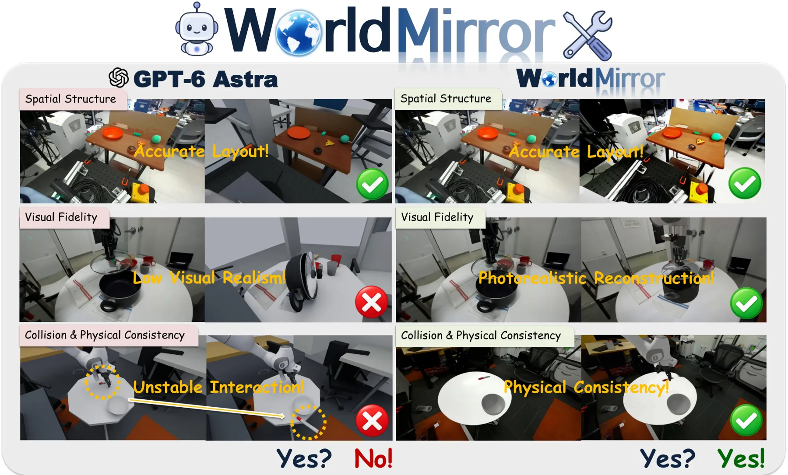
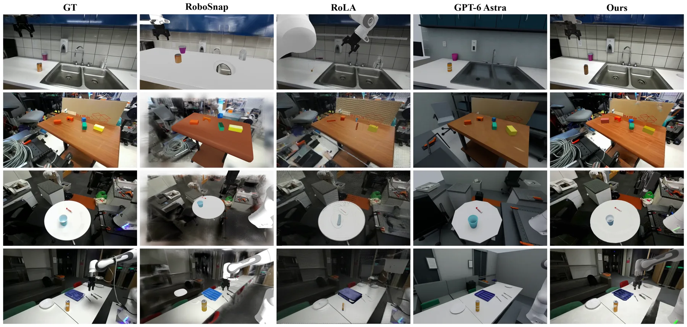
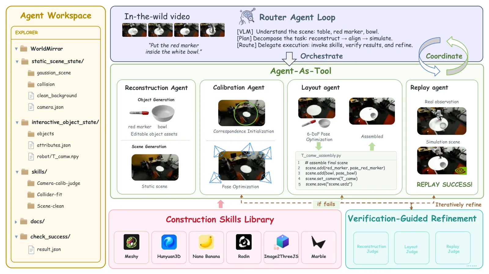
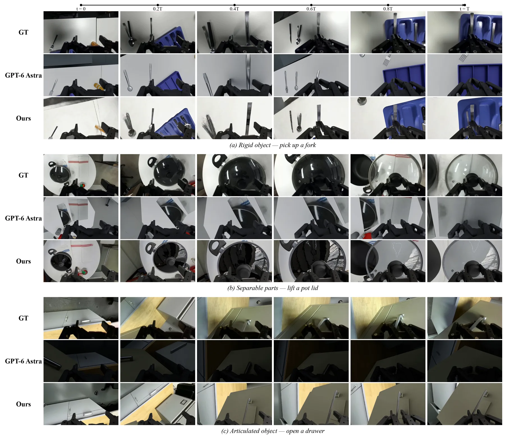
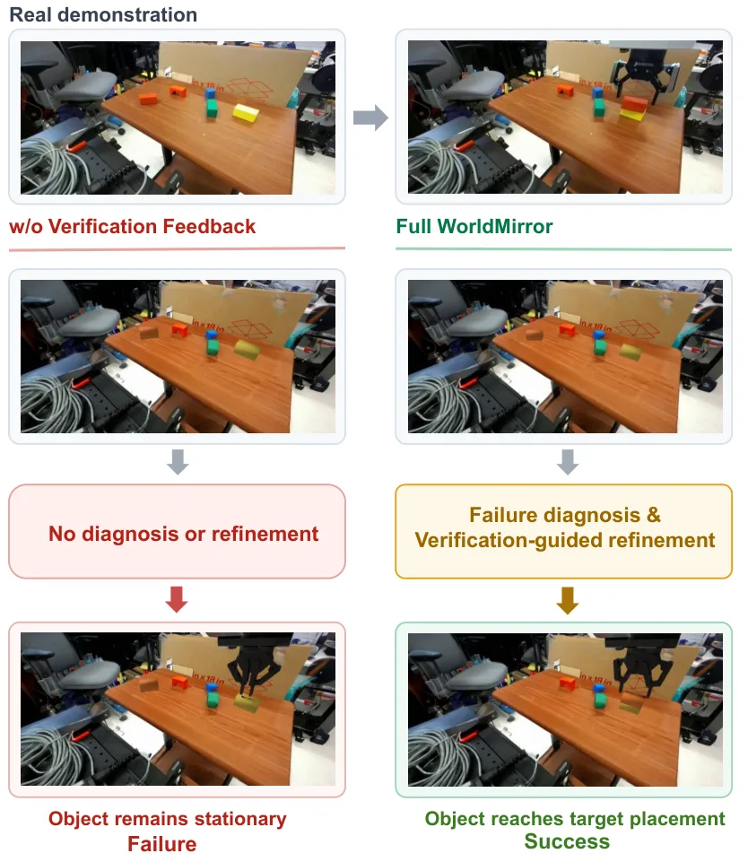

WorldMirror：从野外机器人示教生成可交互世界的 agentic real-to-sim
WorldMirror: Agentic Real-to-Sim Generation of Interactive Worlds from In-the-Wild Robot Demonstrations
一个 router agent 在固定构建图（场景准备→相机标定→支撑面拟合→物体构建→布局→机器人对齐→轨迹回放）上选择合法动作，四个专家 agent 作为可调用工具；共享世界状态记录场景、物体、空间关系与验证反馈，验证不通过就按带类型的失败回滚并重建下游。静态场景用 Gaussian + 碰撞几何，物体用 Meshy/Articraft 生成可编辑资产，相机用 DINOv2 匹配初始化 + 渲染-图像（光度 + LSD 线）精化。DROID 回放：位移误差 1.79 cm（GPT-6 Astra 11.17）、接触 F1 0.873（0.653）、回放成功率 100%（40%）。
replay displacement
replay success
contact F1
final position error
作者、单位与技术谱系 · Research context
作者与单位
研究脉络
- DROID 数据集数据基座关系：全部实验在 DROID 的野外机器人示教上做，输入是视频 + 轨迹。[论文 §4]
- GPT-6 Astra / SAGE / Articraft对照与组件关系：GPT-6 Astra 是主要对照（agentic 3D 构建）；SAGE 提供 agentic 场景构建的参照；Articraft 用于关节物体资产生成。[论文 §2 / §3.3]
- RoLA / RoboSnap / SimFoundry同任务基线关系：三个开源 real-to-sim 系统作为视觉与布局指标的对照。[论文 §4.1]
本篇署名把五个单位合并写在作者行，未逐人标注，因此 authors 只记录可确认的角色；机构级网络关系有署名支持，个人-单位对应关系标为待核验。
方法本质拆解 · What actually changed
是不是微调？
不是训练方法，而是测试时的 agent 编排：编码 agent（router）与四个专家 agent 都是现成模型的组合调用，论文没有报告任何针对本任务的权重训练。真正被“优化”的是可执行世界程序本身（代码与场景参数），通过验证反馈迭代精化。
有没有额外约束？
硬约束是“构建图的合法性 + 验证必须通过才能提交”：阶段顺序与依赖固定，任何更新都要过视觉/空间/物理三类检查；此外机器人基座必须与相机锚定世界系对齐（含轴变换与公制尺度），否则轨迹不能直接执行。这些约束作用在世界状态上，而不是损失函数上。
推理/后端到底做了什么？
推理就是跑一遍 agent 循环：分解场景 → 调技能重建/生成资产 → 标定相机 → 布局与机器人对齐 → 在 Isaac Sim 里回放 → 失败则诊断类型并回滚重做，直到通过或达到迭代预算（典型 4 次回放迭代）。校验用的是渲染图、重建配置与仿真执行结果，不涉及可微优化或全局 BA。
方法本质是什么？
本质是把“几何不一致”转成可定位的失败类型，再用固定依赖图把修正限制在正确的阶段：相机不准就回标定，物体缺失就重建资产，碰撞几何不对就改物理表示。它改变的是“错误能否被归因并回滚”的不确定性，而不是单次重建的精度上限——所以它在回放指标上收益远大于在 IoU 上。
输入机器人视频 + 轨迹；用 router 在固定构建图上编排专家 agent、以 typed failure 回滚修正；输出相机锚定的可执行世界，直接效果是原始轨迹无需重定向即可回放（成功率 100%）。

桥接价值Bridge
桥接价值
它把 real-to-sim 从“一次性前馈重建”改成“可执行世界程序 + 验证驱动修正”，这和我们维护地图的逻辑一致：地图不该是一次性产物，而应是带验证状态、可回滚的状态机。更直接可用的是它的验收口径——不是渲染 PSNR，而是“原始轨迹能否在重建环境里不改动地跑通”，这给“地图够不够准”提供了一个可执行定义。
方法与模块Method
方法摘要
输入 RGB 视频 + 机器人轨迹，router agent 在固定构建图上遍历（场景准备、相机标定、支撑面拟合、物体构建、布局、机器人对齐、轨迹回放），可前进、调用技能、回退、停下检查或接受；四个专家 agent（Reconstruction / Calibration / Layout / Replay）以“agent-as-tool”方式提供多步能力。共享世界状态 M_t=(S_t,O_t,R_t,F_t) 记录场景、物体、空间关系与验证反馈；候选更新只有通过验证才提交，否则按 typed failure 回滚并重建下游。相机标定用 DINOv2 匹配初始化，再用光度 + LSD 线段的渲染-图像目标精化。
可迁移模块
第一是验证协议：失败被写成“类型 + 回滚目标 + 受影响组件”，而不是一个标量分数，这让修正动作可选、可审计。第二是相机锚定 SE(3) 统一坐标系：把相机、支撑面、物体与机器人基座都表达在同一世界系里，并把外参、尺度、轴变换显式写出来——这正是我们多传感器标定后最易出错的一步。第三是“可执行即正确”的评测：用回放成功率与位移/DTW 误差替代渲染指标，可直接借到地图与标定的验收上。

证据Evidence
关键证据与数字
视觉（DROID 10 场景）：LPIPS 0.427 vs GPT-6 Astra 0.606、DISTS 0.168 vs 0.299（越低越好），PSNR 13.57 vs 11.90，但 SSIM 0.570 低于 RoLA 的 0.587。布局（17 个物体、8 组物体对）：mask IoU 0.469 低于 GPT-6 的 0.598，位置误差 9.66 cm 高于 8.72 cm，只有相对距离误差 0.219 最低。回放（不做重规划/重定向）：位移误差 1.79 cm vs 11.17、DTW 1.64 vs 10.82、接触 F1 0.873 vs 0.653、成功率 100% vs 40%。消融：one-pass 末位置误差 33.86 cm、固定迭代 31.77 cm、完整 2.34 cm；去掉 adaptive routing 直接回放失败。
边界与下一步Limits & Next Step
边界与风险
规模很小：10 个 DROID 场景、17 个物体、8 组物体对，且都是桌面操作、固定外置相机。空间指标并不全面领先（IoU 与位置误差都输给 GPT-6 Astra），说明“看起来像”不等于“摆得准”，而后者才是回放成功的因。管线依赖外部资产生成器（Meshy、Articraft），任一环节失败会沿依赖图传播；物理一致性只通过“能否回放”间接验证，没有做接触力/摩擦参数辨识。
下一步实验
把“验证-回滚”协议抽出来用到我们自采序列的地图验收上：定义三类 typed failure（尺度错、外参漂移、动态残留），各自对应一个回滚阶段，比较“一次性建图”与“带验证回滚建图”在同一段回放上的位移误差。第二个实验只验证相机锚定坐标系：把我们的相机-IMU-激光外参统一到一个锚定世界系后，检查回放/重投影误差是否比各自独立标定下降，从而判断“统一坐标系”本身值多少。





